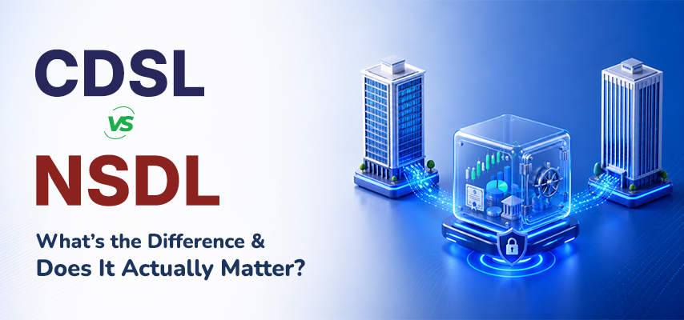

CDSL vs NSDL: What’s the Difference and Does It Actually Matter?

When you open a demat account, you’re quietly choosing between two institutions that will hold your entire investment portfolio. Here’s what that choice actually means.
Most investors set up their demat account, link it to a broker, and never think about CDSL or NSDL again. That’s completely understandable. You’re focused on picking stocks, setting up SIPs, or figuring out which mutual fund suits your goal. The plumbing underneath the system isn’t exactly dinner table conversation.
But here’s the thing, these two depositories are literally holding your shares. Every stock you buy gets stored either in CDSL or NSDL. And while you may never need to think about them on a daily basis, understanding what they do and how they differ can make you a more confident, informed investor.
So let’s break it down properly, without the jargon.
What is a Depository?
Before getting into the CDSL vs NSDL debate, let’s cover the basics.
A depository is an organization that holds your financial securities in electronic form. Think of it exactly like a bank, but instead of storing your money, it stores your shares, bonds, mutual fund units, ETFs, and government securities.
Back in the early 1990s, this wasn’t the case. Investors used to receive physical share certificates, actual paper documents that could be lost, forged, damaged in a flood, or eaten by termites. Yes, that actually happened. Physical certificates were a nightmare to manage, and transfers took weeks.
The introduction of depositories changed everything. Securities became digital, transfers became instant, and the Indian stock market became accessible to millions of ordinary people. Today, not a single investor in India holds physical shares for listed companies. A depository is to your investments what a bank is to your money, it keeps everything safe, in order, and easy to access.
In India, depositories are regulated by SEBI (Securities and Exchange Board of India) and must follow strict standards around security, transparency, and investor protection.
What is NSDL?
NSDL stands for National Securities Depository Limited. It was established in 1996, making it India’s first depository, the organization that basically started the entire electronic securities system in this country.
NSDL was promoted by the National Stock Exchange (NSE) along with financial institutions like IDBI Bank and the Unit Trust of India. Its launch was a landmark moment. For the first time, investors could hold and transfer shares without a single piece of paper.
Over the decades, NSDL became the preferred home for institutional investors, large financial entities, and mutual fund houses. Its infrastructure is deep, its compliance standards are high, and it manages a significant chunk of India’s total assets held in demat form.
If your demat account number starts with “IN” followed by 14 digits — for example, IN30223612345678 — your holdings are with NSDL.
What is CDSL?
CDSL stands for Central Depository Services (India) Limited. It came along in 1999, three years after NSDL, and was promoted primarily by BSE Limited (formerly the Bombay Stock Exchange).
CDSL was created to bring competition into the depository space and serve a wider range of investors, particularly retail investors who were starting to trickle into the stock market in larger numbers. That strategy paid off. With the explosion of retail investing in India — especially after the pandemic — CDSL’s numbers have surged.
CDSL is also a publicly listed company on the BSE and NSE, which is a notable distinction from NSDL. This means its financials are publicly disclosed, and retail investors can even buy CDSL shares if they want exposure to India’s growing investment ecosystem.
If your demat account number is entirely numeric with 16 digits — for example, 1201230012345678 — you’re with CDSL.
What is a Depository Participant (DP)?
Here’s something that confuses many new investors: you cannot open an account directly with CDSL or NSDL. You have to go through a middleman called a Depository Participant (DP).
A Depository Participant is simply any SEBI-registered entity authorized to offer demat services — this includes stockbrokers, banks, and financial institutions. When you open a demat account with a broker, that broker is your DP, and your account is connected to whichever depository (CDSL or NSDL) the broker partners with.
Your broker is the face. CDSL or NSDL is the vault. You interact with the broker daily, but your investments actually live in the depository.
This is why choosing a good broker matters so much. The depository itself is largely invisible to you — but the broker’s platform, research tools, customer support, and fee structure affect your experience every single day.
CDSL vs NSDL: The Key Differences
Both depositories do essentially the same job. But there are meaningful differences worth knowing:
| Feature | NSDL | CDSL |
|---|---|---|
| Full Form | National Securities Depository Limited | Central Depository Services (India) Limited |
| Founded | 1996 | 1999 |
| Promoted By | NSE + financial institutions | BSE Limited |
| Market Position | First depository in India | Second depository in India |
| Investor Base | Strong institutional presence | Dominant retail investor base |
| Account Format | Starts with “IN” + 14 digits | 16-digit numeric format |
| Listed On | Not listed (as of writing) | BSE & NSE (listed company) |
| Regulator | SEBI | SEBI |
One detail worth highlighting: CDSL’s listing on the stock exchange means its performance is publicly trackable. In FY2023, CDSL reported a net profit of over ₹300 crore, reflecting just how dramatically retail investing has grown in India. NSDL, while equally important, operates without this public visibility.
How to Know Which Depository Holds Your Account
This is simpler than most people think. Just look at your demat account number.
NSDL Account
Format: IN30223612345678
- Starts with the letters “IN”
- Followed by exactly 14 digits
- Total of 16 characters
CDSL Account
Format: 1201230012345678
- Entirely numeric — no letters
- Exactly 16 digits
- Starts with 1 or 2 (in most cases)
You can also check the CDSL or NSDL websites directly by logging in with your credentials or checking the statement your broker sends. Most trading apps display the depository name clearly in the account details section.
Is CDSL Better Than NSDL?
This is the question everyone wants answered, and the honest answer is: it doesn’t really matter for most investors.
Both are regulated by SEBI. Both use advanced technology. Both have decades of track records without any significant custody failures. Your shares are equally safe in either.
The distinction that actually affects your life is the broker you choose, not the depository behind them. A poor trading platform with slow customer support will frustrate you every day. Whether your account is at CDSL or NSDL, you’ll barely notice.
That said, here’s a practical observation from how the market has evolved: CDSL has become the depository of choice for most new-age fintech brokers because of its efficient digital infrastructure and API connectivity. If you’re using a modern discount broker, there’s a high chance you’re already with CDSL.
NSDL, on the other hand, tends to be associated with traditional brokers, banks offering demat services, and institutional accounts.
How to Open a Free Demat Account Online
The good news is that opening a demat account today takes less than 15 minutes and doesn’t require a single piece of paper. Here’s how it typically works:
Step 1: Choose a SEBI-Registered Broker
Pick a broker that suits your investing style. We offer a easy to use platform built for self-directed investors who want to manage their own trades. We also provide research support and guidance for investors who prefer a bit more hand-holding before making decisions. Whatever your approach, our platform is designed to give you what you actually need, not just flashy marketing.
Step 2: Submit Your KYC Documents
You’ll need your PAN card, Aadhaar card, a bank account, and a passport-sized photo. Most platforms pull Aadhaar details automatically with your consent, making this step very quick.
Step 3: Complete Online Verification
Most brokers now offer Video KYC, where a representative verifies your identity on a short video call. Others use OTP-based Aadhaar verification. Either way, you don’t need to visit a branch.
Step 4: Account Activation
Once KYC is verified, your demat account is created and linked to the broker’s depository partner — either CDSL or NSDL. You’ll receive your account number, login credentials, and you’re ready to invest.
The availability of free demat account online services has completely removed the barrier that once kept ordinary people away from stock market investing. Today, a first-time investor in a Tier-3 city can open an account, invest in an index fund, and start building wealth in under an hour.
How SEBI Keeps Both Depositories in Check
SEBI is the regulator that keeps the entire system honest. It oversees both CDSL and NSDL to ensure they maintain operational integrity, data security, and investor protection standards.
Some of the key things SEBI mandates for depositories include regular audits, strict cybersecurity frameworks, grievance redressal mechanisms, and clear rules around how investor data is stored and shared.
This oversight is why Indian investors can sleep comfortably knowing their holdings are secure — regardless of whether their account is with CDSL or NSDL.
Both depositories also work closely with SEBI during corporate actions like stock splits, rights issues, bonus shares, and dividends. When a company declares a dividend, the depository ensures the correct shareholders receive the benefit based on the records maintained in their systems.
Conclusion
CDSL and NSDL are the two pillars that hold India’s entire demat ecosystem upright. Without them, every share transaction would still involve physical certificates, manual transfers, and weeks of waiting. Thanks to these two depositories, buying or selling shares in the Indian stock market happens in seconds.
NSDL came first, built the foundation, and remains the backbone for institutional investing. CDSL followed, focused on retail investors, and has grown dramatically in the era of app-based investing.
For you as an investor, the practical takeaway is simple: don’t spend too much energy choosing between CDSL and NSDL. Spend that energy choosing the right broker — one with a clean platform, fair fees, solid research support, and responsive customer service.
Open your free demat account online, understand what’s holding your investments, and then focus on what actually grows your wealth: a consistent, disciplined investment strategy.
Disclaimer: This content is for informational and educational purposes only and should not be construed as investment advice, a recommendation, or an offer to buy or sell any security. Investments in securities markets are subject to market risks; please read all related documents carefully before investing. Past performance is not indicative of future returns. Readers are advised to consult a registered investment advisor or financial professional before making any investment decisions. We do not guarantee the accuracy, completeness, or timeliness of the information provided and accept no liability for any loss arising from its use.
FAQs
1. What are CDSL and NSDL?
CDSL (Central Depository Services Limited) and NSDL (National Securities Depository Limited) are India’s two SEBI-registered depositories. They hold investors’ shares, bonds, mutual fund units, and other securities in electronic (dematerialized) form, eliminating the need for physical share certificates. Every demat account in India is linked to one of these two depositories through a broker or other Depository Participant.
2. What is the main difference between CDSL and NSDL?
NSDL was established in 1996 and is promoted by NSE. CDSL came in 1999 and was promoted by BSE. NSDL has a stronger institutional investor base, while CDSL dominates among retail investors. Their account number formats are also different — NSDL accounts start with “IN”, while CDSL accounts are entirely numeric.
3. Which depository is safer — CDSL or NSDL?
Both are equally safe. Both are regulated by SEBI, use robust technology, and have operated for decades without any significant custody failures. Safety is not a meaningful differentiator between the two.
4. Can I choose whether my demat account goes to CDSL or NSDL?
Not directly. The depository is determined by the broker you choose. Some brokers are exclusively tied to one depository, while a few offer connections to both. If it matters to you which depository holds your account, check with your broker before signing up.
5. How do I know which depository my account is linked to?
Look at your demat account number. If it starts with “IN” followed by 14 digits, you’re with NSDL. If it’s a 16-digit number with no letters, you’re with CDSL. You can also find this information in your account details section on your broker’s app or website.
6. Is CDSL a listed company?
Yes. CDSL is listed on both BSE and NSE, which means its financials are publicly available. NSDL is not listed as of now. This also means retail investors can buy CDSL shares as a way to invest in India’s growing demat ecosystem.
7. Does the choice of CDSL or NSDL affect my trading experience?
In day-to-day terms, no. Both depositories work seamlessly in the background. What affects your daily experience much more is the broker you use — their platform speed, research tools, customer support, and fee structure.
8. Can I transfer my holdings from CDSL to NSDL or vice versa?
Yes, it’s possible through an inter-depository transfer, but it involves paperwork and coordination between your current and new broker. Most investors never need to do this. If you’re switching brokers, your new broker will guide you through the process of transferring holdings.
9. What is a Depository Participant and why do I need one?
A Depository Participant (DP) is a SEBI-registered intermediary — like a broker or bank — that connects you to a depository. You cannot open a demat account directly with CDSL or NSDL. Your broker acts as your DP and handles all interactions with the depository on your behalf.